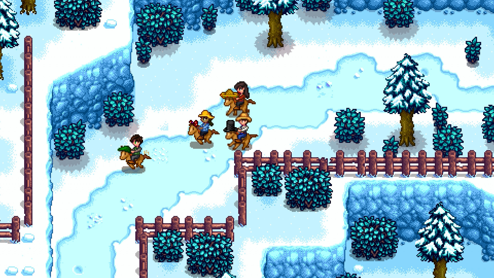

Stardew Valley
A história inspiradora por trás de um dos maiores jogos indie
Introdução
Nem todo grande jogo nasce em um estúdio gigante… às vezes, ele nasce no quarto de alguém que decidiu não desistir. Stardew Valley é exatamente isso: um sonho construído com esforço, dedicação e muita persistência.
Criado por Eric Barone, o jogo se tornou um dos maiores sucessos indie da história, vendendo milhões de cópias e conquistando uma comunidade apaixonada ao redor do mundo.
O Jogo
Stardew Valley é um RPG de simulação de fazenda, fortemente inspirado na clássica série Harvest Moon. Porém, ao invés de apenas copiar, Eric Barone decidiu melhorar tudo aquilo que ele acreditava que a série original havia deixado de lado.
No jogo, você herda a fazenda do seu avô e recebe uma nova chance de vida. Cabe a você plantar, colher, cuidar dos animais, explorar cavernas e construir sua própria história.
Além disso, você pode interagir com os moradores da cidade, criar amizades e até desenvolver relacionamentos, tornando o jogo muito mais profundo do que uma simples simulação.
A Jornada
A jornada de Eric Barone não foi nada fácil. Ele passou 5 anos desenvolvendo o jogo sozinho, enfrentando dúvidas constantes e até momentos em que pensou em desistir.
Mesmo sem experiência prévia na criação de jogos, ele decidiu aprender tudo do zero: programação, design, música e arte.
Durante esse tempo, ele mantinha um blog onde compartilhava o progresso do jogo, mostrando atualizações e ouvindo o feedback da comunidade.
As Dificuldades
Curiosamente, Eric Barone nem queria ser desenvolvedor de jogos no início. Formado em TI, ele buscava apenas um emprego estável na área.
Porém, após várias tentativas frustradas de conseguir trabalho, ele percebeu que precisava melhorar suas habilidades. Foi aí que surgiu a ideia de criar jogos como forma de aprendizado.
Ele começou com algo simples, mas foi evoluindo o projeto aos poucos. Chegou a redesenhar personagens diversas vezes até atingir o nível de qualidade que desejava.
O Lançamento
Após anos de desenvolvimento, Eric foi abordado pela Chucklefish, que se ofereceu para publicar o jogo.
Mesmo assim, pouco antes do lançamento, ele estava inseguro e com medo de que o jogo fracassasse. Ainda assim, decidiu seguir em frente.
O jogo foi lançado em 26 de fevereiro de 2016… e o resultado foi simplesmente surpreendente.
O Sucesso
Stardew Valley rapidamente se tornou um fenômeno mundial, ultrapassando mais de 10 milhões de cópias vendidas.
O jogo foi lançado para diversas plataformas e continua sendo atualizado até hoje, mantendo uma base de jogadores extremamente fiel.
O Que Podemos Aprender?
A história de Eric Barone traz lições valiosas, principalmente para quem quer entrar no mundo da programação e desenvolvimento de jogos.
Primeiro: ele soube identificar uma oportunidade. Ele percebeu que havia uma comunidade forte, mas insatisfeita com os jogos existentes.
Segundo: ele ouviu as pessoas. Ao compartilhar o progresso do jogo, ele conseguiu adaptar o projeto às expectativas da comunidade.
E por fim: ele não desistiu. Mesmo com medo, dúvidas e dificuldades, ele continuou.
Conclusão
Stardew Valley não é apenas um jogo… é a prova de que dedicação, visão e persistência podem transformar uma ideia simples em algo gigantesco.
Para qualquer desenvolvedor iniciante, essa história mostra que começar pequeno não é um problema, o importante é continuar evoluindo.


